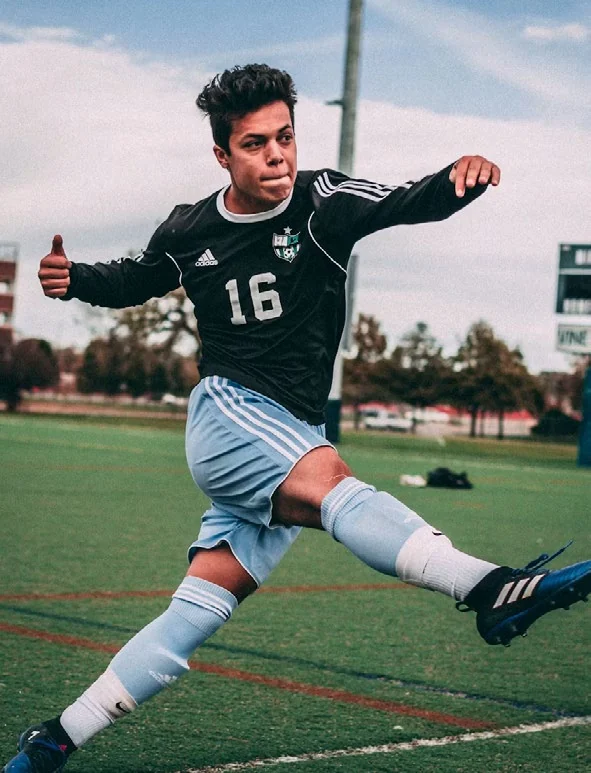

Claridad sobre tu situación
Una conversación sobre tu momento deportivo y una ruta de carrera que sirva para valorar las siguientes decisiones.
 Hablemos ↗
Hablemos ↗Una agencia de representación de futbolistas debe ayudarte a decidir sobre tu contrato y sobre la carrera que estás construyendo. DVP Football Management reúne la negociación deportiva, la planificación de carrera y el acompañamiento al jugador. La propuesta se trabaja contigo: qué necesitas hoy, qué paso tiene sentido después y qué apoyo eliges activar fuera de la cancha.
Hablar de DVP Football Management ↗
Renovar, permanecer en un club o explorar una transferencia son decisiones distintas. Por eso el plan deportivo y la negociación se leen juntos: tu situación actual, tus objetivos y las condiciones de la oportunidad deben poder explicarse con claridad antes de avanzar.
El acompañamiento de DVP no termina cuando se firma un contrato. El seguimiento de tu evolución se conecta con el trabajo de Analytics, mientras que las necesidades patrimoniales, de imagen y de bienestar se coordinan mediante sus ramas específicas. No es necesario confundir todo ese apoyo con un solo paquete.
Una conversación sobre tu momento deportivo y una ruta de carrera que sirva para valorar las siguientes decisiones.
Negociación, revisión del contrato deportivo y seguimiento de oportunidades de renovación o transferencia, dentro del alcance acordado.
Un equipo que conecte la representación con el análisis y con los módulos adicionales que decidas contratar.
No. La transferencia es una posible operación dentro de una relación de representación. El acompañamiento también abarca contratos, renovaciones, planificación deportiva y seguimiento de carrera.
La representación incluye los cinco frentes descritos en esta página. Wealth, Publicity, los especialistas de Wellness y la asesoría legal ajena al contrato deportivo se cotizan de forma independiente.
No se promete un fichaje ni un resultado deportivo. El servicio consiste en acompañar decisiones y gestionar oportunidades; cada operación depende de su contexto y de los acuerdos entre las partes.